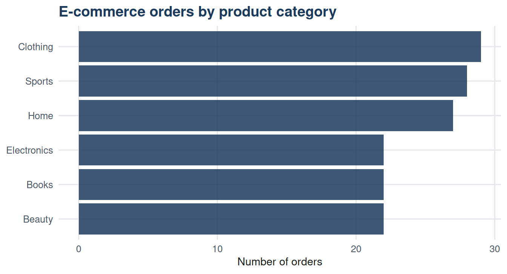
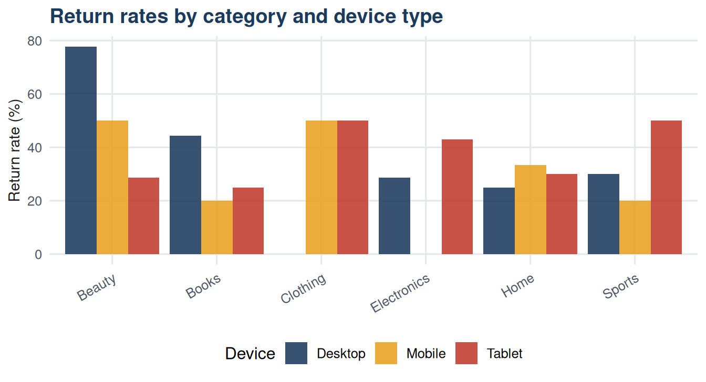
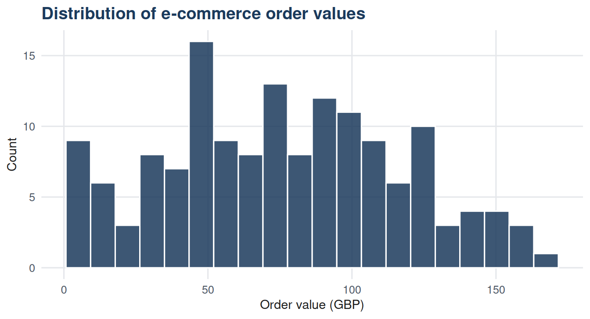
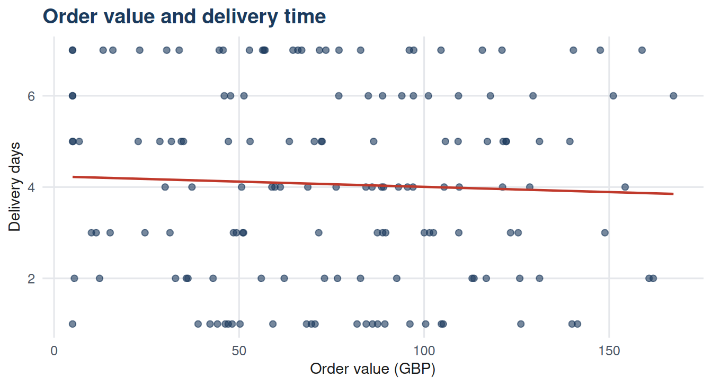
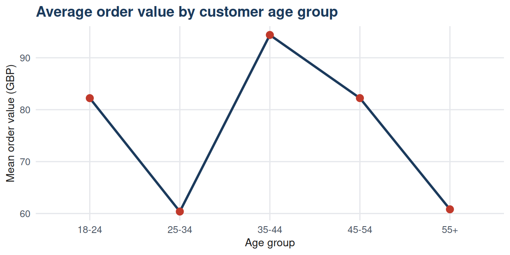

| Purpose | Recommended chart | Design note |
|---|---|---|
| Distribution of one categorical variable | Bar chart | Order bars by frequency unless a natural order exists. |
| Distribution of one numerical variable | Histogram | Choose bin width carefully; adjacent bars, no gaps. |
| Comparison across categories | Bar chart or dot plot | Keep categories few; avoid 3D effects. |
| Relationship between two numerical variables | Scatter plot | Add a trend line when direction of association matters. |
| Change over time | Line graph | Ensure the x-axis represents time consistently. |
| Part-to-whole composition | Stacked bar or pie chart | Pie charts work for few categories only. |
7 Chapter 07: Graphs for Categorical and Quantitative Data
7.1 Learning objectives
By the end of this chapter, the student should be able to:
- Select an appropriate graph for a given variable type and analytical purpose.
- Construct and interpret bar charts, pie charts, histograms, and line graphs.
- Construct and interpret scatter plots for two quantitative variables.
- Identify misleading features in commonly used graphs.
- Apply good practice principles to the design and labelling of charts.
7.2 Introduction
A well-chosen graph reveals what a table conceals. Patterns of distribution, comparison across groups, trends over time, and relationships between variables all become visible when data are displayed graphically. A poorly chosen graph, or a well-chosen graph with poor design, can mislead as easily as it can inform.
This chapter covers the main chart types used in business analysis, organised by the nature of the data being displayed. The dataset for this unit contains 150 e-commerce orders, with variables covering product category, payment method, device type, order value, items ordered, delivery time, return status, and customer age group.
7.3 Choosing the right chart
The appropriate chart depends on two things: the type of variable being displayed, and the question being asked.
7.4 Graphs for categorical data
7.4.1 Bar chart
A bar chart displays the frequency or relative frequency of each category as a rectangular bar. Bars are separated by gaps to indicate that the variable is categorical, not continuous. The height of each bar represents the count or proportion.
Code
library(dplyr)
cat_counts <- df |>
count(product_category, name = "n") |>
mutate(product_category = reorder(product_category, n))
ggplot(cat_counts, aes(x = product_category, y = n)) +
geom_bar(stat = "identity", fill = "#1B3A5C", alpha = 0.85) +
coord_flip() +
labs(x = NULL, y = "Number of orders",
title = "E-commerce orders by product category") +
theme_dmm()
Ordering bars by frequency rather than alphabetically makes comparisons easier. The horizontal layout used here is particularly readable when category labels are long.
7.4.2 Grouped and stacked bar charts
When two categorical variables are to be shown together, bars can be grouped side by side or stacked.
Code
return_rates <- df |>
group_by(product_category, device_type) |>
summarise(pct_returned = round(100 * mean(returned == "Yes"), 1),
.groups = "drop")
ggplot(return_rates, aes(x = product_category, y = pct_returned,
fill = device_type)) +
geom_bar(stat = "identity", position = "dodge", alpha = 0.87) +
scale_fill_manual(values = c("#1B3A5C", "#E8A020", "#C0392B")) +
labs(x = NULL, y = "Return rate (%)", fill = "Device",
title = "Return rates by category and device type") +
theme_dmm() +
theme(axis.text.x = element_text(angle = 30, hjust = 1))
The grouped bar chart allows direct comparison of return rates across device types within each category. A stacked version would show overall return volume but make within-category comparison harder.
7.5 Graphs for quantitative data
7.5.1 Histogram
The histogram, introduced in Chapter 06, remains the primary tool for displaying the distribution of a single numerical variable. It reveals the shape, centre, and spread of the data in a single view.
Code
ggplot(df, aes(x = order_value_gbp)) +
geom_histogram(bins = 20, fill = "#1B3A5C", colour = "white", alpha = 0.85) +
labs(x = "Order value (GBP)", y = "Count",
title = "Distribution of e-commerce order values") +
theme_dmm()
7.5.2 Scatter plot
A scatter plot displays the relationship between two numerical variables. Each observation is represented as a point, with one variable on each axis.
Code
ggplot(df, aes(x = order_value_gbp, y = delivery_days)) +
geom_point(colour = "#1B3A5C", alpha = 0.6, size = 1.8) +
geom_smooth(method = "lm", se = FALSE, colour = "#C0392B",
linewidth = 0.8) +
labs(x = "Order value (GBP)", y = "Delivery days",
title = "Order value and delivery time") +
theme_dmm()
The trend line added here is a linear regression line. It summarises the direction of the relationship. Whether the relationship is statistically meaningful requires the tests covered in Chapters 15 and 16.
7.5.3 Line graph
A line graph connects successive data points with a line and is most appropriate when the x-axis represents time or another ordered sequence.

Age group is an ordinal variable with a natural order, making a connected line appropriate here. For a purely nominal variable with no order, a bar chart would be preferable.
7.6 Misleading graphs
Well-designed graphs follow a small number of principles that, when violated, produce misleading displays.
| Problem | Effect on the reader |
|---|---|
| Truncated y-axis | Small differences appear large when the axis does not start at zero. |
| 3D effects | Visual distortion makes some bars appear taller or shorter than they are. |
| Unequal intervals | The visual impression of frequency is distorted when class widths are unequal. |
| Missing labels | A chart without axis labels, a title, or a source cannot be evaluated. |
| Cherry-picked time window | A trend looks strong or weak depending on which time period is shown. |
The most common offence in business reporting is the truncated y-axis. Starting a bar chart at a value other than zero exaggerates differences between groups. This is occasionally justified for line graphs where small absolute changes carry practical significance, but it requires an explicit note to the reader.
7.7 Summary
Choosing the right chart depends on whether the variable is categorical or numerical and on the specific question being asked. Bar charts display categorical distributions and group comparisons. Histograms display numerical distributions. Scatter plots show relationships between two numerical variables. Line graphs display trends over ordered sequences.
Good chart design requires clear labelling, an appropriate scale, and freedom from visual distortions. A graph that misrepresents the data it purports to display is worse than no graph at all.
7.8 Key terms
| Term | Definition |
|---|---|
| Bar chart | A chart displaying the frequency or proportion of each category as a separated rectangular bar. |
| Grouped bar chart | A bar chart in which two or more bars per category are placed side by side for comparison. |
| Stacked bar chart | A bar chart in which bars for sub-categories are stacked to show both composition and total. |
| Scatter plot | A chart displaying the joint distribution of two numerical variables as individual points. |
| Line graph | A chart connecting successive data points with a line, used for ordered or time-series data. |
| Truncated axis | An axis that does not begin at zero, which can exaggerate the visual magnitude of differences. |
7.9 Exercises
Using Figure 7.1, which product category accounts for the most orders? Would a pie chart have been a better choice for displaying this information? Justify your answer.
A colleague produces a bar chart comparing quarterly sales with the y-axis starting at GBP 95,000 rather than zero. The fourth quarter bar appears twice as tall as the first quarter bar. The actual values are GBP 98,000 and GBP 102,000. What is the actual percentage increase, and how does this compare with the visual impression?
Looking at Figure 7.4, describe the apparent relationship between order value and delivery days. Can you conclude from this chart that higher-value orders cause longer delivery times?
A dataset contains daily website visits over 12 months. Which chart type would you use to display this data, and why?
A manager wants to compare customer satisfaction scores (rated 1 to 10) across five regional offices. Which chart type would you recommend, and what aspect of the data would each alternative chart type emphasise or obscure?